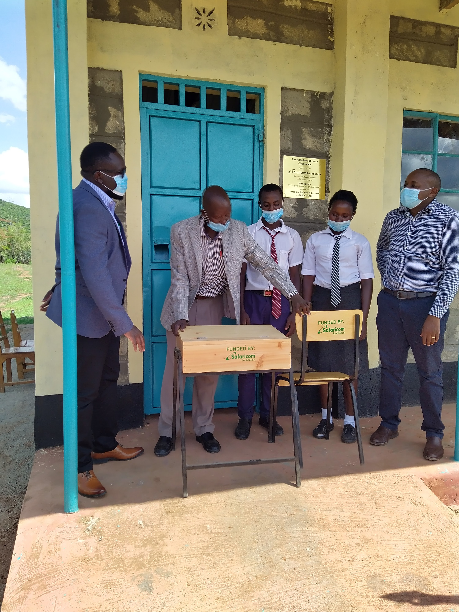

Education
My education background is quite a mix of few areas starting with Bachelor of Technology in Electrical and Communications Engineering from Moi University. I proceded to do an MBA at the University of Nairobi(Strategic Management Option) and currently Pursuing a PhD in Business Administration in the same area.
Check out my MBA Project on Strategic Change Management
In terms of Job Experience I have worked in the following organizations in the roles indicated
In addition, I do volunteer in Community Devolopment by committing time and resources on Worthy ventures. Take a look at Pamoja Foundation Project we did at AIC Ndune Secondary School.
See a few photos below on the Handing over Ceremony
So why am I taking a Programming Course you would ask?
Well, i do have interest in Startups and I believe in the enormous potential of Digital Transformation and Posession of coding Skills in our dynamic World of Business
My hobbies include the following
A list of Projects I have done can be found below: